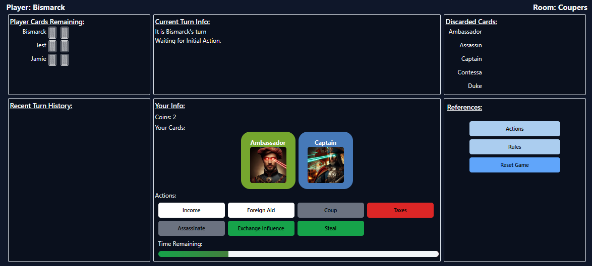
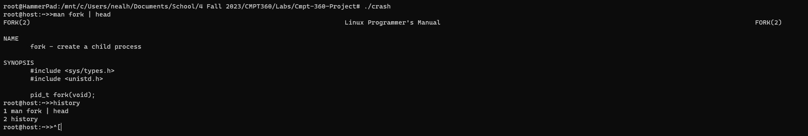

Programming Projects
Super Couper
Web App version of the card game Coup, playable at https://batec2.github.io/CoupOnline/
Worked with a group of students to faithfully recreate the card game.
Built with react (vite) frontend, node.js backend, and Mongo.db databasing
Utilized related technologies: Tailwind CSS, shadCN CSS framework (based on radix-ui), and Socket.io
Chess Game

Created two-person chess game in Python
Utilized Zelle's Graphics libraries for visual interface
Supports complete ruleset (including castling, promotion, pawn
movement and capturing) EXCEPT en passant.
In process of recreating project in Java with support for
undo/redo (memento pattern), move history, and en passant.
Linux Shell
Program simulating a bash-like Linux shell.
Utilized C libraries to build a Linux shell with environment
variables, fork-exec, fork-fork-exec, piping, input/output
redirection, globs, command history, and directory navigation.